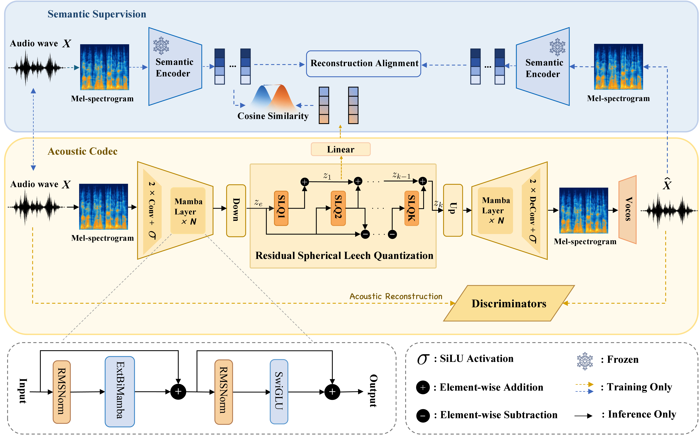

A single-tower acoustic codec trained end-to-end with discriminators, supervised additionally by a frozen semantic encoder (Whisper / SenseVoice) via reconstruction alignment and cosine-similarity objectives.

Each column is the same utterance reconstructed by a different codec. Bitrates are reported next to each method. Our variants are highlighted in red.
| Method | Sample 1 | Sample 2 | Sample 3 | Sample 4 |
|---|---|---|---|---|
| Ground Truth | ||||
| EnCodec 1500 bps | ||||
| DAC 1500 bps | ||||
| SpeechTokenizer 1000 bps | ||||
| BigCodec 1040 bps | ||||
| Mimi 1100 bps | ||||
| XCodec 1000 bps | ||||
| XCodec2.0 800 bps | ||||
| DualCodec 1075 bps | ||||
| XY-Tokenizer 1000 bps | ||||
| SimWhisper-Codec 1100 bps | ||||
| BiMTokenizer-Whisper 1100 bps | ||||
| BiMTokenizer-SenseVoice 1100 bps | ||||
All baselines reproduced using official pre-trained checkpoints at their respective bitrates.
The noisier test-other set, drawn from speakers and recording conditions held out from training.
| Method | Sample 1 | Sample 2 | Sample 3 | Sample 4 |
|---|---|---|---|---|
| Ground Truth | ||||
| EnCodec 1500 bps | ||||
| DAC 1500 bps | ||||
| SpeechTokenizer 1000 bps | ||||
| BigCodec 1040 bps | ||||
| Mimi 1100 bps | ||||
| DualCodec 1075 bps | ||||
| XY-Tokenizer 1000 bps | ||||
| BiMTokenizer-Whisper 1100 bps | ||||
| BiMTokenizer-SenseVoice 1100 bps | ||||